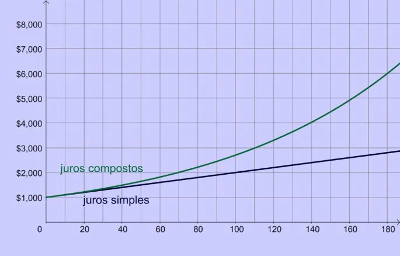

Nos juros simples a correção é aplicada a cada período e considera apenas o valor inicial.
Nos juros compostos a
correção é feita em cima de valores já corrigidos.

Os Juros Simples são calculados aplicando a seguinte fórmula:
J = C x i x t
Sendo,
J: juros
C: valor inicial da transação, chamado em matemática financeira de capital
i: taxa de juros (valor normalmente expresso em porcentagem)
t: período da transação
O montante capitalizado a Juros Compostos é encontrado aplicando a seguinte fórmula:
M = C(1 + t)^t
Sendo,
M: montante
C: capital
i: taxa de juros
t: período de tempo